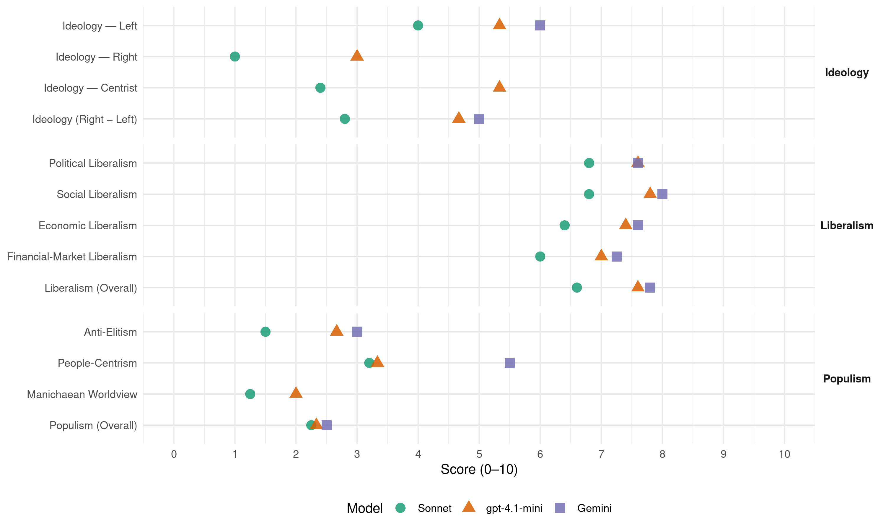

PLD (Dominican Republic, 2000)
manifesto_id 168331_200005
Get full text: This site shows derived annotations and short verbatim quotes only. The full manifesto text is © Manifesto Project / WZB — obtain it via manifesto-project.wzb.eu using the manifesto_id above.
Headline scores
| Dimension | Sonnet | gpt-4.1-mini | Gemini |
|---|---|---|---|
| Populism (Overall) | 2.2 | 2.3 | 2.5 |
| Anti-Elitism | 1.5 | 2.7 | 3.0 |
| People-Centrism | 3.2 | 3.3 | 5.5 |
| Manichaean Worldview | 1.2 | 2.0 | – |
| Ideology (Right − Left) | 2.8 | 4.7 | 5.0 |
| Liberalism (Overall) | 6.6 | 7.6 | 7.8 |
| Political Liberalism | 6.8 | 7.6 | 7.6 |
| Social Liberalism | 6.8 | 7.8 | 8.0 |
| Economic Liberalism | 6.4 | 7.4 | 7.6 |
| Financial-Market Liberalism | 6.0 | 7.0 | 7.2 |
Evidence per dimension
Economic Liberalism
Gemini · score 8.0 · verified · chunk 1
“fortalecimiento del libre mercado”
segregados del mercado laboral y de la creación de riquezas. Igualmente, se fundamenta en el fortalecimiento del libre mercado, que, de manera
Gemini · score 9.0 · verified · chunk 2
“modelo de economía social de mercado”
Los logros alcanzados dentro del modelo de economía social de mercado han permitido iniciar un conjunto de reformas
Gemini · score 8.0 · verified · chunk 3
“motivar una competencia sana que tienda”
producción de energía eléctrica, a fin de motivar una competencia sana que tienda a reducir los costos
Gemini · score 7.0 · verified · chunk 4
“Fomentar la cultura innovadora en el sector empresarial”
popularizar la ciencia y la tecnología como parte de la cultura nacional. > Fomentar la cultura innovadora en el sector empresarial por diversos mecanismos: propiciar un sistema
Gemini · score 6.0 · verified · chunk 5
“modelo de economía social de mercado”
Fortalecimiento del actual modelo de economía social de mercado como instrumento para la generación de
gpt-4.1-mini · score 8.0 · verified · chunk 1
“fortalecimiento de la estabilidad macroeconómica y de la profundización y expansión de la capacidad redistributiva del Estado”
La garantía de la continuidad del proceso de crecimiento que vive el país requiere del fortalecimiento de la estabilidad macroeconómica y de la profundización y expansión de la capacidad redistributiva del Estado.
gpt-4.1-mini · score 8.0 · verified · chunk 2
“economía social de mercado”
…Los logros alcanzados dentro del modelo de economía social de mercado han permitido iniciar un conjunto de reformas económicas, sociales, ambientales y políticas de carácter estructural e institucional, que preparan al país para una sólida reestructuración productiva de bienes y servicios y una adecuada distribución y redistribución del ingreso que descansa en el principio de equidad social…
gpt-4.1-mini · score 7.0 · verified · chunk 3
“política de crédito agrícola”
…los programas gubernamentales de financiamiento y fomento de la pequeña y la microempresa. Objetivo: > Consolidación de la aplicación de la perspectiva de equidad de género en las políticas públicas…
gpt-4.1-mini · score 7.0 · verified · chunk 4
“programas gubernamentales de financiamiento y fomento de la pequeña y la microempresa”
…Los programas gubernamentales de financiamiento y fomento de la pequeña y la microempresa. Objetivo: Consolidación de la aplicación de la perspectiva de equidad de género en las políticas públicas…
gpt-4.1-mini · score 7.0 · verified · chunk 5
“modernización de los cuerpos de defensa”
Fortalecer el sistema de defensa nacional mediante la continuación de las políticas de modernización de los cuerpos de defensa.
Sonnet · score 7.0 · verified · chunk 1
“fortalecimiento del libre mercado”
se fundamenta en el fortalecimiento del libre mercado, que, de manera gradual, permita ir incrementando la competitividad y la eficiencia
Sonnet · score 7.0 · verified · chunk 2
“Creación de mayores condiciones que impulsen la reestructuración del aparato productivo, la competitividad y la apertura comercial”
Objetivos Específicos: Creación de mayores condiciones que impulsen la reestructuración del aparato productivo, la competitividad y la apertura comercial.
Sonnet · score 6.0 · verified · chunk 3
“competitividad del sector en el extranjero”
Diseñar e implementar una nueva política industrial encaminada a incrementar la oferta exportable. Implementar la Ley de Promoción de Exportaciones para mejorar la competitividad del sector en el extranjero
Sonnet · score 6.0 · verified · chunk 4
“participación del Sector Privado de la construcción”
Estímulo hacia una adecuada participación del Sector Privado de la construcción. Estratificación del mercado habitacional
Sonnet · score 6.0 · verified · chunk 5
“la liberalización de la economía”
la capitalización de las empresas del Estado, la liberalización de la economía, cambios significativos en la estructura
Financial-Market Liberalism
Gemini · score 8.0 · verified · chunk 1
“fomento del Mercado de Valores”
disponibilidad de financiamiento a mediano y largo plazo, mediante el fomento del Mercado de Valores y el desarrollo de
Gemini · score 8.0 · verified · chunk 2
“fomento del Mercado de Valores”
disponibilidad de financiamiento a mediano y largo plazo, mediante el fomento del Mercado de Valores y el desarrollo de las administradoras
Gemini · score 7.0 · verified · chunk 3
“mantenga los costos financieros reales en”
Aplicar una política macroeconómica que mantenga los costos financieros reales en niveles razonables y que sean
Gemini · score 6.0 · verified · chunk 4
“sector financiero cree un Banco Internacional del Dominicano”
laborales y de cualquier otra índole. > Propiciar las condiciones para que el sector financiero cree un Banco Internacional del Dominicano en el Exterior, con la finalidad de canalizar
gpt-4.1-mini · score 7.0 · verified · chunk 1
“mercado financiero nunca antes se había expandido como ahora”
La complejidad surge en la diversificación y especialización del mercado de bienes y servicios debido al impulso del desarrollo de las fuerzas productivas, expresadas en el desarrollo de la tecnología, y de manera particular, la cibernética y las comunicaciones. El mercado financiero nunca antes se había expandido como ahora.
gpt-4.1-mini · score 8.0 · verified · chunk 2
“normas relativas al control del crédito otorgado por el sistema bancario”
…Estrategias: > Reforzar las normas relativas al control del crédito otorgado por el sistema bancario al sector público no financiero, ^ en especial, el crédito neto del Banco de Reservas al sector público, evitando asi desequilibrios internos y externos que pudieran derivar en un aumento significativo en los agregados monetarios, por encima de los requerimientos de la economía.
gpt-4.1-mini · score 6.0 · verified · chunk 4
“Crear la Caja Comunitaria de ahorro para la Producción”
…Crear la Caja Comunitaria de ahorro para la Producción, con la participación de financiamiento internacional para fortalecer la gestión de las pequeñas productoras y microempresarias de barrios urbanos y de la zona rural…
Sonnet · score 7.0 · verified · chunk 1
“fomento del Mercado de Valores”
Ampliar la disponibilidad de financiamiento a mediano y largo plazo, mediante el fomento del Mercado de Valores y el desarrollo de las administradoras del Fondo de Pensiones
Sonnet · score 7.0 · verified · chunk 2
“Fomentar la apertura del sistema financiero a la inversión de capital extranjero”
Fomentar la apertura del sistema financiero a la inversión de capital extranjero, como una forma de aumentar los niveles de competencia del mercado financiero.
Sonnet · score 5.0 · verified · chunk 3
“costos financieros reales en niveles razonables”
Aplicar una política macroeconómica que mantenga los costos financieros reales en niveles razonables y que sean comparables con los que prevalecen en los principales países competidores
Sonnet · score 6.0 · verified · chunk 4
“sector financiero cree un Banco Internacional”
Propiciar las condiciones para que el sector financiero cree un Banco Internacional del Dominicano en el Exterior
Sonnet · score 5.0 · verified · chunk 5
“aportes del Gobierno, de los maestros y la banca nacional e internacional”
Continuar el Programa de Construcción de Viviendas para Profesores, conjugando los aportes del Gobierno, de los maestros y la banca nacional e internacional
Political Liberalism
Gemini · score 8.0 · verified · chunk 1
“consolidación de la institucionalidad democrática”
social, la equidad social y la institucionalidad democrática. Este dato constituye la más clara
Gemini · score 8.0 · verified · chunk 2
“continuidad de la vida democrática”
estabilidad social, la lucha contra la pobreza y la continuidad de la vida democrática. Los logros alcanzados dentro del modelo
Gemini · score 7.0 · verified · chunk 3
“garantizan los derechos de los jovenes”
mediante la cual se garantizan los derechos de los jovenes y adolescentes referidos al empleo
Gemini · score 8.0 · verified · chunk 4
“Reforma de la Constitución de la República”
Objetivos: > Reforma de la Constitución de la República, para incluir los derechos culturales
Gemini · score 7.0 · verified · chunk 5
“vinculación recíproca entre la escuela y la comunidad, en una práctica democrática”
promoviendo la vinculación recíproca entre la escuela y la comunidad, en una práctica democrática, para enfrentar de manera conjunta
gpt-4.1-mini · score 8.0 · verified · chunk 1
“consolidación de la institucionalidad democrática”
Las propuestas programáticas contenidas en el expresan la continuidad de un proyecto de Nación asumido por el Partido de la Liberación Dominicana, caracterizado por una visión estratégica comprometida con las transformaciones en el orden político, economico, social y cultural centrada en el desarrollo equilibrado y sostenido, la equidad social y la institucionalidad democrática.
gpt-4.1-mini · score 8.0 · verified · chunk 2
“vida democrática”
…A pesar de estas dificultades, propias de la vida democrática, los avances que han beneficiado a la sociedad en su conjunto son la mejor prueba de que, con la continuidad del PLD en el poder, el país tiene la mejor garantía de consolidación del crecimiento, la estabilidad y la equidad social.
gpt-4.1-mini · score 7.0 · verified · chunk 3
“Ley General de Juventud”
…Gestionar la aprobación y posterior aplicación de la Ley General de Juventud, mediante la cual se garantizan los derechos de los jovenes y adolescentes referidos al empleo, la salud, la educación, la cultura, los deportes, la recreación, la movilidad social, el empoderamiento y la participación.
gpt-4.1-mini · score 8.0 · verified · chunk 4
“Participación política e institucional de la mujer”
…objetivos fundamentales para el período 2000-2004: Participación política e institucional de la mujer. Establecimiento del principio de igualdad de oportunidades en el empleo y el acceso a los recursos productivos…
gpt-4.1-mini · score 7.0 · verified · chunk 5
“práctica democrática”
Continuar promoviendo la vinculación recíproca entre la escuela y la comunidad, en una práctica democrática, para enfrentar de manera conjunta los problemas educativos y comunitarios, así como para contribuir a fortalecer nuestros elementos culturales.
Sonnet · score 8.0 · verified · chunk 1
“consolidación de la institucionalidad democrática”
Consolidación de la institucionalidad democrática y Mejoramiento de la calidad de la gestión pública
Sonnet · score 7.0 · verified · chunk 2
“continuidad de la vida democrática”
ha garantizado un crecimiento de la ocupación, base necesaria para la estabilidad social, la lucha contra la pobreza y la continuidad de la vida democrática.
Sonnet · score 6.0 · verified · chunk 3
“participación democrática”
mejora de la representación campesina, comunitaria y barrial en los foros de decisión a nivel local y nacional, como garantía de la participación democrática
Sonnet · score 7.0 · verified · chunk 4
“democratización y desarrollo institucional”
Descentralización, democratización y desarrollo institucional. Preservación, registro y difusión del patrimonio cultural nacional.
Sonnet · score 6.0 · verified · chunk 5
“en una práctica democrática”
Continuar promoviendo la vinculación recíproca entre la escuela y la comunidad, en una práctica democrática
Liberalism (Overall)
Gemini · score 8.0 · verified · chunk 1
“fortalecimiento del libre mercado”
segregados del mercado laboral y de la creación de riquezas. Igualmente, se fundamenta en el fortalecimiento del libre mercado, que, de manera
Gemini · score 8.0 · verified · chunk 2
“modelo de economía social de mercado”
Los logros alcanzados dentro del modelo de economía social de mercado han permitido iniciar un conjunto de reformas
Gemini · score 8.0 · verified · chunk 3
“motivar una competencia sana que tienda”
producción de energía eléctrica, a fin de motivar una competencia sana que tienda a reducir los costos
Gemini · score 8.0 · verified · chunk 4
“garanticen la igualdad de oportunidades entre hombres y mujeres”
desarrollo para este período presidencial 2000-2004 garanticen la igualdad de oportunidades entre hombres y mujeres. > Promover por parte del Gobierno
Gemini · score 7.0 · verified · chunk 5
“modelo de economía social de mercado”
Fortalecimiento del actual modelo de economía social de mercado como instrumento para la generación de
gpt-4.1-mini · score 8.0 · verified · chunk 1
“fortalecimiento de la estabilidad macroeconómica y de la profundización y expansión de la capacidad redistributiva del Estado”
La garantía de la continuidad del proceso de crecimiento que vive el país requiere del fortalecimiento de la estabilidad macroeconómica y de la profundización y expansión de la capacidad redistributiva del Estado.
gpt-4.1-mini · score 8.0 · verified · chunk 2
“modelo de economía social de mercado”
…Los logros alcanzados dentro del modelo de economía social de mercado han permitido iniciar un conjunto de reformas económicas, sociales, ambientales y políticas de carácter estructural e institucional, que preparan al país para una sólida reestructuración productiva de bienes y servicios y una adecuada distribución y redistribución del ingreso que descansa en el principio de equidad social…
gpt-4.1-mini · score 7.0 · verified · chunk 3
“Ley General de Juventud”
…Gestionar la aprobación y posterior aplicación de la Ley General de Juventud, mediante la cual se garantizan los derechos de los jovenes y adolescentes referidos al empleo, la salud, la educación, la cultura, los deportes, la recreación, la movilidad social, el empoderamiento y la participación.
gpt-4.1-mini · score 8.0 · verified · chunk 4
“Participación política e institucional de la mujer”
…objetivos fundamentales para el período 2000-2004: Participación política e institucional de la mujer. Establecimiento del principio de igualdad de oportunidades en el empleo y el acceso a los recursos productivos…
gpt-4.1-mini · score 7.0 · verified · chunk 5
“práctica democrática”
Continuar promoviendo la vinculación recíproca entre la escuela y la comunidad, en una práctica democrática, para enfrentar de manera conjunta los problemas educativos y comunitarios, así como para contribuir a fortalecer nuestros elementos culturales.
Sonnet · score 7.0 · verified · chunk 1
“modelo de economía social de mercado”
consolida la visión del modelo de economía social de mercado, aplicado en su primera gestión
Sonnet · score 7.0 · verified · chunk 2
“economía social de mercado”
Los logros alcanzados dentro del modelo de economía social de mercado han permitido iniciar un conjunto de reformas económicas, sociales, ambientales y políticas de carácter estructural e institucional
Sonnet · score 6.0 · verified · chunk 3
“promoción de inversión extranjera”
Facilitar los mecanismos de transferencia tecnológica, la promoción de exportaciones y la promoción de inversión extranjera
Sonnet · score 7.0 · verified · chunk 4
“igualdad de oportunidades entre hombres y mujeres”
garanticen la igualdad de oportunidades entre hombres y mujeres. Promover por parte del Gobierno la aprobación de los cambios legislativos
Sonnet · score 6.0 · verified · chunk 5
“la liberalización de la economía”
la capitalización de las empresas del Estado, la liberalización de la economía, cambios significativos en la estructura
Anti-Elitism
Gemini · score 3.0 · verified · chunk 1
“mezquindad política del principal partido de oposición”
no se han cumplido cabalmente, tanto por la mezquindad política del principal partido de oposición como por limitaciones
gpt-4.1-mini · score 3.0 · verified · chunk 1
“mezquindad política del principal partido de oposición”
No obstante lo anterior, nuestras aspiraciones y metas no se han cumplido cabalmente, tanto por la mezquindad política del principal partido de oposición como por limitaciones financieras y de tiempo.
gpt-4.1-mini · score 3.0 · verified · chunk 2
“la oposición no ha permitido que el Ejecutivo desarrolle todas sus iniciativas”
…que preparan al país para una sólida reestructuración productiva de bienes y servicios y una adecuada distribución y redistribución del ingreso que descansa en el principio de equidad social Sin embargo, dadas las limitaciones generadas por la lucha política, la oposición no ha permitido que el Ejecutivo desarrolle todas sus iniciativas, especialmente las reformas económicas, que deben ser sancionadas por el Congreso. A pesar de estas dificultades, propias de la vida democrática, los avances que han beneficiado a la sociedad en su conjunto son la mejor prueba de que, con la continuidad del PLD en el poder, el país tiene la mejor garantía de consolidación del crecimiento, la estabilidad y la equidad social.
gpt-4.1-mini · score 2.0 · verified · chunk 3
“clientelismo politico”
…ineficiencia de la gestión admnistrativa, bajo productividad, clientelismo politico, obsolencia tecnologica y carga fiscal, aspectos que le redundaban en el mantenimiento de una politica de subsidio por parte del estado.
Sonnet · score 3.0 · verified · chunk 1
“mezquindad política del principal partido de oposición”
tanto por la mezquindad política del principal partido de oposición como por limitaciones financieras y de tiempo
Sonnet · score 1.0 · mixed · chunk 2
“la oposición no ha permitido que el Ejecutivo”
dadas las limitaciones generadas por la lucha política, la oposición no ha permitido que el Ejecutivo desarrolle todas sus iniciativas
Sonnet · score 1.0 · verified · chunk 3
“clientelismo politico, obsolencia tecnologica”
ineficiencia de la gestión admnistrativa, bajo productividad, clientelismo politico, obsolencia tecnologica y carga fiscal
Sonnet · score 1.0 · verified · chunk 4
“elitismo, insularismo, insuficiencia operativa”
La acción cultural del Estado, tradicionalmente se caracterizó por: centralismo, incapacidad democrática, carencia de marcos legales adecuados, elitismo, insularismo, insuficiencia operativa
Sonnet · score 1.0 · verified · chunk 5
“la opresión y la explotación del hombre”
coinciden en la proclamación de la justicia, la libertad en contra de la opresión y la explotación del hombre
Ideology — Centrist
gpt-4.1-mini · score 7.0 · verified · chunk 1
“compromiso solemne de llevarlo a la práctica a partir del momento en que me juramente como Presidente”
considero un alto honor que me haya tocado a mí, en mi condición de Candidato de mi Partido, depositarlo en manos del pueblo dominicano, con el que, por ese simple hecho, establezco el compromiso solemne de llevarlo a la práctica a partir del momento en que me juramente como Presidente de la República.
gpt-4.1-mini · score 4.0 · verified · chunk 2
“la sociedad en su conjunto”
…A pesar de estas dificultades, propias de la vida democrática, los avances que han beneficiado a la sociedad en su conjunto son la mejor prueba de que, con la continuidad del PLD en el poder, el país tiene la mejor garantía de consolidación del crecimiento, la estabilidad y la equidad social.
gpt-4.1-mini · score 5.0 · verified · chunk 3
“participación activa de los sujetos afectados”
…la lógica paternalista y la generación de actitudes de dependencia por parte de los sujetos. Esta participación permite crear oportunidades de movilidad social, perceptibles por la población.
Sonnet · score 3.0 · verified · chunk 1
“economía social de mercado”
consolida la visión del modelo de economía social de mercado, aplicado en su primera gestión
Sonnet · score 3.0 · verified · chunk 2
“Conservación de la memoria documental como patrimonio del pueblo”
Objetivos: Conservación de la memoria documental como patrimonio del pueblo. Estímulo a la investigación y conocimiento de nuestra historia.
Sonnet · score 2.0 · verified · chunk 3
“participación activa de los sujetos afectados”
fomentar la participación activa de los sujetos afectados, en la construcción de alternativas de solución a sus propias necesidades
Sonnet · score 2.0 · verified · chunk 4
“acción concertada y claramente definida”
demanda de la acción concertada y claramente definida de los sectores públicos y privados y de las organizaciones comunitarias.
Sonnet · score 2.0 · verified · chunk 5
“diálogo social y la concertación”
Consolidación del Consejo Consultivo del trabajo como organo permanente del diálogo social y la concertación
Ideology — Left
Gemini · score 6.0 · verified · chunk 1
“disminución sustancial de la pobreza”
tenga como objetivo principal la disminución sustancial de la pobreza en nuestro país. Otra, la de continuar
gpt-4.1-mini · score 6.0 · verified · chunk 1
“redistribución del ingreso, para disminuir de manera significativa los niveles de pobreza y desigualdad social”
las acciones se encaminarán a implantar tanto las reformas económicas que consoliden y garanticen el crecimiento, como a ejecutar las reformas políticas y sociales que complementen la redistribución del ingreso, para disminuir de manera significativa los niveles de pobreza y desigualdad social.
gpt-4.1-mini · score 6.0 · verified · chunk 2
“adecuada distribución y redistribución del ingreso que descansa en el principio de equidad social”
…reformas económicas, sociales, ambientales y políticas de carácter estructural e institucional, que preparan al país para una sólida reestructuración productiva de bienes y servicios y una adecuada distribución y redistribución del ingreso que descansa en el principio de equidad social Sin embargo, dadas las limitaciones generadas por la lucha política, la oposición no ha permitido que el Ejecutivo desarrolle todas sus iniciativas…
gpt-4.1-mini · score 4.0 · verified · chunk 3
“lucha contra la pobreza”
…para el próximo gobierno del PLD, la lucha contra la pobreza, especialmente en lo que tiene que ver con los indigentes, es una prioridad, para lo cual nos proponemos:
Sonnet · score 5.0 · verified · chunk 1
“lucha contra la pobreza y la desigualdad social”
El impulso del crecimiento económico con equidad social constituye la base de la lucha contra la pobreza y la desigualdad social
Sonnet · score 4.0 · verified · chunk 2
“Mejora de la distribución y redistribución del ingreso con equidad social”
Objetivos Específicos: Mejora de la distribución y redistribución del ingreso con equidad social.
Sonnet · score 3.0 · verified · chunk 3
“redistribución del ingreso y de oportunidades sociales”
Crear condiciones hacia mejores y mayores niveles de redistribución del ingreso y de oportunidades sociales, sobre todo, para los sectores menos favorecidos
Sonnet · score 5.0 · verified · chunk 4
“combatir la pobreza y disminuir la inequidad social”
contribuyendo así al desarrollo social y económico del país, a combatir la pobreza y disminuir la inequidad social.
Sonnet · score 3.0 · verified · chunk 5
“equilibrio entre el crecimiento económico y la protección social”
plantea una nueva estrategia a ser diseñada que permita establecer un equilibrio entre el crecimiento económico y la protección social
Ideology (Right − Left)
Gemini · score 5.0 · verified · chunk 1
“disminución sustancial de la pobreza”
tenga como objetivo principal la disminución sustancial de la pobreza en nuestro país. Otra, la de continuar
gpt-4.1-mini · score 6.0 · verified · chunk 1
“redistribución del ingreso, para disminuir de manera significativa los niveles de pobreza y desigualdad social”
las acciones se encaminarán a implantar tanto las reformas económicas que consoliden y garanticen el crecimiento, como a ejecutar las reformas políticas y sociales que complementen la redistribución del ingreso, para disminuir de manera significativa los niveles de pobreza y desigualdad social.
gpt-4.1-mini · score 4.0 · verified · chunk 2
“la oposición no ha permitido que el Ejecutivo desarrolle todas sus iniciativas”
…que preparan al país para una sólida reestructuración productiva de bienes y servicios y una adecuada distribución y redistribución del ingreso que descansa en el principio de equidad social Sin embargo, dadas las limitaciones generadas por la lucha política, la oposición no ha permitido que el Ejecutivo desarrolle todas sus iniciativas, especialmente las reformas económicas, que deben ser sancionadas por el Congreso.
gpt-4.1-mini · score 4.0 · verified · chunk 3
“lucha contra la pobreza”
…para el próximo gobierno del PLD, la lucha contra la pobreza, especialmente en lo que tiene que ver con los indigentes, es una prioridad, para lo cual nos proponemos:
Sonnet · score 3.0 · verified · chunk 1
“equidad social y la institucionalidad democrática”
centrada en el desarrollo equilibrado y sostenido, la equidad social y la institucionalidad democrática
Sonnet · score 3.0 · verified · chunk 2
“Mejora de la distribución y redistribución del ingreso con equidad social”
Objetivos Específicos: Mejora de la distribución y redistribución del ingreso con equidad social.
Sonnet · score 2.0 · verified · chunk 3
“redistribución del ingreso y de oportunidades sociales”
Crear condiciones hacia mejores y mayores niveles de redistribución del ingreso y de oportunidades sociales
Sonnet · score 4.0 · verified · chunk 4
“combatir la pobreza y disminuir la inequidad social”
contribuyendo así al desarrollo social y económico del país, a combatir la pobreza y disminuir la inequidad social.
Sonnet · score 2.0 · verified · chunk 5
“equilibrio entre el crecimiento económico y la protección social”
plantea una nueva estrategia a ser diseñada que permita establecer un equilibrio entre el crecimiento económico y la protección social
Ideology — Right
gpt-4.1-mini · score 4.0 · verified · chunk 1
“mantener el control legítimo de la inmigración haitiana ilegal”
Mantener el control legítimo de la inmigración haitiana ilegal. Continuar buscando, en una línea de respeto de los derechos humanos, la forma adecuada de definir la situación legal de los haitianos que viven en el territorio nacional.
gpt-4.1-mini · score 2.0 · verified · chunk 3
“fortalecer los controles fronterizos”
…Fortalecer los controles fronterizos para limitar el flujo de migrantes ilegales. > Realizar un Censo Nacional de Extranjeros que residen en la República Dominicana…
Sonnet · score 1.0 · verified · chunk 1
“control legítimo de la inmigración haitiana ilegal”
Mantener el control legítimo de la inmigración haitiana ilegal
Sonnet · score 1.0 · verified · chunk 3
“salvaguarda de la autonomía y la soberanía del Estado”
respeto a los derechos inalienables del inmigrante y la salvaguarda de la autonomía y la soberanía del Estado Dominicano
Sonnet · score 1.0 · verified · chunk 4
“preservando el ser dominicano”
Formar acerca de los valores ciudadanos nacionales, preservando el ser dominicano sin rechazar los valores universales.
Sonnet · score 1.0 · verified · chunk 5
“preservar la integridad del territorio dominicano”
compatibles con la alta tarea de preservar la integridad del territorio dominicano
Manichaean Worldview
gpt-4.1-mini · score 2.0 · verified · chunk 1
“mezquindad política del principal partido de oposición”
No obstante lo anterior, nuestras aspiraciones y metas no se han cumplido cabalmente, tanto por la mezquindad política del principal partido de oposición como por limitaciones financieras y de tiempo.
gpt-4.1-mini · score 2.0 · verified · chunk 2
“lucha política, la oposición no ha permitido”
…que preparan al país para una sólida reestructuración productiva de bienes y servicios y una adecuada distribución y redistribución del ingreso que descansa en el principio de equidad social Sin embargo, dadas las limitaciones generadas por la lucha política, la oposición no ha permitido que el Ejecutivo desarrolle todas sus iniciativas, especialmente las reformas económicas, que deben ser sancionadas por el Congreso.
gpt-4.1-mini · score 2.0 · verified · chunk 3
“lucha contra la pobreza”
…para el próximo gobierno del PLD, la lucha contra la pobreza, especialmente en lo que tiene que ver con los indigentes, es una prioridad, para lo cual nos proponemos:
Sonnet · score 2.0 · verified · chunk 1
“políticas económicas populistas son los pobres”
se ha convertido en un axioma que los más perjudicados con las políticas económicas populistas son los pobres
Sonnet · score 1.0 · mixed · chunk 2
“la oposición no ha permitido que el Ejecutivo”
dadas las limitaciones generadas por la lucha política, la oposición no ha permitido que el Ejecutivo desarrolle todas sus iniciativas, especialmente las reformas económicas
Sonnet · score 1.0 · verified · chunk 3
“lógica asistencialista, clientelar y benefactora”
erradicar y superar la lógica asistencialista, clientelar y benefactora que al tiempo que pretende actuar contra las condiciones
Sonnet · score 1.0 · verified · chunk 4
“marginación histórica a la que se ha visto sometida”
De esta forma, se supera la marginación histórica a la que se ha visto sometida la mujer en nuestras sociedades
Sonnet · score 1.0 · verified · chunk 5
“situación de opresión económica, social y política es intolerable”
millones de hombres y mujeres cuya situación de opresión económica, social y política es intolerable
People-Centrism
Gemini · score 6.0 · verified · chunk 1
“las aspiraciones de nuestro pueblo”
y del análisis pormenorizado de los problemas que nos aquejan y las aspiraciones de nuestro pueblo; quiere ser la expresión
Gemini · score 5.0 · verified · chunk 2
“patrimonio del pueblo”
Conservación de la memoria documental como patrimonio del pueblo. > Estímulo a la investigación
gpt-4.1-mini · score 5.0 · verified · chunk 1
“el elector dominicano encuentre en el presente documento una guía”
Procuramos, en suma, que el elector dominicano encuentre en el presente documento una guía que le sirva de orientación mediante la cual, a la vista de los resultados obtenidos las diferentes areas, pueda decidir si somos capaces o no de cumplir con nuestros compromisos.
gpt-4.1-mini · score 2.0 · verified · chunk 2
“la sociedad en su conjunto”
…A pesar de estas dificultades, propias de la vida democrática, los avances que han beneficiado a la sociedad en su conjunto son la mejor prueba de que, con la continuidad del PLD en el poder, el país tiene la mejor garantía de consolidación del crecimiento, la estabilidad y la equidad social.
gpt-4.1-mini · score 3.0 · verified · chunk 3
“la participación activa de los sujetos afectados”
…la lógica paternalista y la generación de actitudes de dependencia por parte de los sujetos. Esta participación permite crear oportunidades de movilidad social, perceptibles por la población.
Sonnet · score 4.0 · verified · chunk 1
“aspiraciones de la mayoría de la población dominicana”
en consonancia con las aspiraciones de la mayoría de la población dominicana y del perfil histórico que constituye la identidad del Partido
Sonnet · score 3.0 · verified · chunk 2
“Conservación de la memoria documental como patrimonio del pueblo”
Objetivos: Reforma y modernización del marco legal que crea el Archivo General de la Nación. Conservación de la memoria documental como patrimonio del pueblo.
Sonnet · score 3.0 · verified · chunk 3
“calidad de vida de la población dominicana”
saneamiento ambiental y del aumento de la calidad de vida de la población dominicana
Sonnet · score 3.0 · verified · chunk 4
“participación popular”
se amplíen los mecanismos de cogestión y de participación popular. Difundir acerca del patrimonio cultural.
Sonnet · score 3.0 · verified · chunk 5
“en beneficio de los trabajadores”
Fortalecer la actual Comisión Tripartita de Obras Sociales en beneficio de los trabajadores
Populism (Overall)
Gemini · score 3.0 · verified · chunk 1
“mezquindad política del principal partido de oposición”
no se han cumplido cabalmente, tanto por la mezquindad política del principal partido de oposición como por limitaciones
Gemini · score 2.0 · verified · chunk 2
“patrimonio del pueblo”
Conservación de la memoria documental como patrimonio del pueblo. > Estímulo a la investigación
gpt-4.1-mini · score 3.0 · verified · chunk 1
“mezquindad política del principal partido de oposición”
No obstante lo anterior, nuestras aspiraciones y metas no se han cumplido cabalmente, tanto por la mezquindad política del principal partido de oposición como por limitaciones financieras y de tiempo.
gpt-4.1-mini · score 2.0 · verified · chunk 2
“la oposición no ha permitido que el Ejecutivo desarrolle todas sus iniciativas”
…que preparan al país para una sólida reestructuración productiva de bienes y servicios y una adecuada distribución y redistribución del ingreso que descansa en el principio de equidad social Sin embargo, dadas las limitaciones generadas por la lucha política, la oposición no ha permitido que el Ejecutivo desarrolle todas sus iniciativas, especialmente las reformas económicas, que deben ser sancionadas por el Congreso.
gpt-4.1-mini · score 2.0 · verified · chunk 3
“clientelismo politico”
…ineficiencia de la gestión admnistrativa, bajo productividad, clientelismo politico, obsolencia tecnologica y carga fiscal, aspectos que le redundaban en el mantenimiento de una politica de subsidio por parte del estado.
Sonnet · score 3.0 · verified · chunk 1
“mezquindad política del principal partido de oposición”
tanto por la mezquindad política del principal partido de oposición como por limitaciones financieras y de tiempo
Sonnet · score 2.0 · mixed · chunk 2
“la oposición no ha permitido que el Ejecutivo”
dadas las limitaciones generadas por la lucha política, la oposición no ha permitido que el Ejecutivo desarrolle todas sus iniciativas
Sonnet · score 2.0 · verified · chunk 3
“lucha contra la pobreza”
no solamente para ejecutar una política de pleno empleo, sino además para enfrentar con eficacia la lucha contra la pobreza
Sonnet · score 2.0 · verified · chunk 4
“participación popular”
se amplíen los mecanismos de cogestión y de participación popular. Difundir acerca del patrimonio cultural.
Sonnet · score 2.0 · verified · chunk 5
“la opresión y la explotación del hombre”
coinciden en la proclamación de la justicia, la libertad en contra de la opresión y la explotación del hombre
Social Liberalism